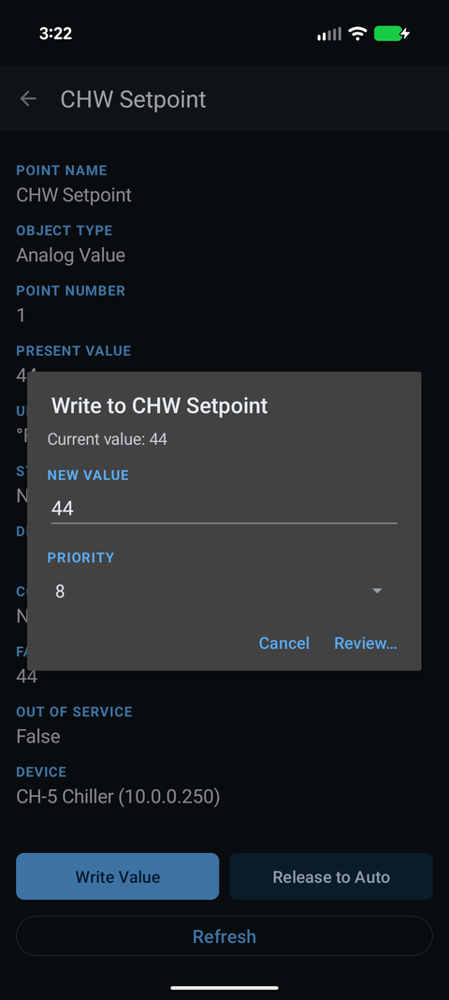

Is it safe to write to a BACnet point?
Updated 30 September 2026
Reading is completely safe; writing is real control of live equipment, so treat it with respect. A BACnet write commands actual hardware — a fan, a valve, a setpoint — and the value holds until it is released. Done knowingly — the right point, a sensible priority, and a release afterwards — it is a normal, safe part of the job. Done blindly on a system you don't understand, it can disrupt comfort, waste energy, or trip equipment. Easy BACnet keeps write mode off by default so you never command anything by accident.


Reading is safe. Always.
Scanning, browsing points, reading values, checking status and exporting a CSV only ask devices for information. Nothing you read changes anything. You can explore a live building's BACnet network all day without touching its operation. If all you need is to see what's there and what it's doing, there is zero risk.
What a write actually does
A write commands a real point. If you set a fan command On, the fan runs. If you set a damper to 100%, it opens. Crucially, the command persists: it sits in the point's priority array and stays there until someone clears it. That's the whole point of BACnet commanding — but it's also why a forgotten override is the most common way people cause trouble. The equipment does exactly what you told it, indefinitely, until it's released.
The golden rule: if you command something, release it when you're done. A point left overridden is how the next person inherits a “stuck” unit.
How to write responsibly
- Know the point. Confirm the name, type and current value before you command. Writing to the wrong Analog Value because two look alike is an avoidable mistake.
- Use a sensible priority. Manual operators typically command at priority 8 — high enough to take manual control, low enough that safeties and critical logic at priorities 1–2 still win. Don't reach for priority 1 unless you know exactly why.
- Change one thing at a time and watch the result, rather than commanding several points at once.
- Release when finished, and read the point back to confirm control returned to automatic.
- Get permission on someone else's system. On an occupied or critical building, commanding a point is an operational change — clear it with whoever runs the controls first.
Where it can go wrong
- Comfort and process. Overriding a setpoint or a fan in an occupied space, a lab, a grow room or a data hall has immediate real-world effects.
- Energy and equipment. Forcing a valve or damper against the sequence can waste energy or, in the worst case, contribute to freezing a coil or short-cycling a compressor.
- The forgotten override. The value itself was fine — it was leaving it commanded that caused weeks of a unit “not working right.”
The safety rails Easy BACnet gives you
Write mode is off by default and resets to off every time you launch the app, so you can't command anything without deliberately turning writing on. You choose the priority explicitly, the app reads the priority array back so you can see the effect, and Release is one tap away. The guard rails are there; the judgement is still yours.